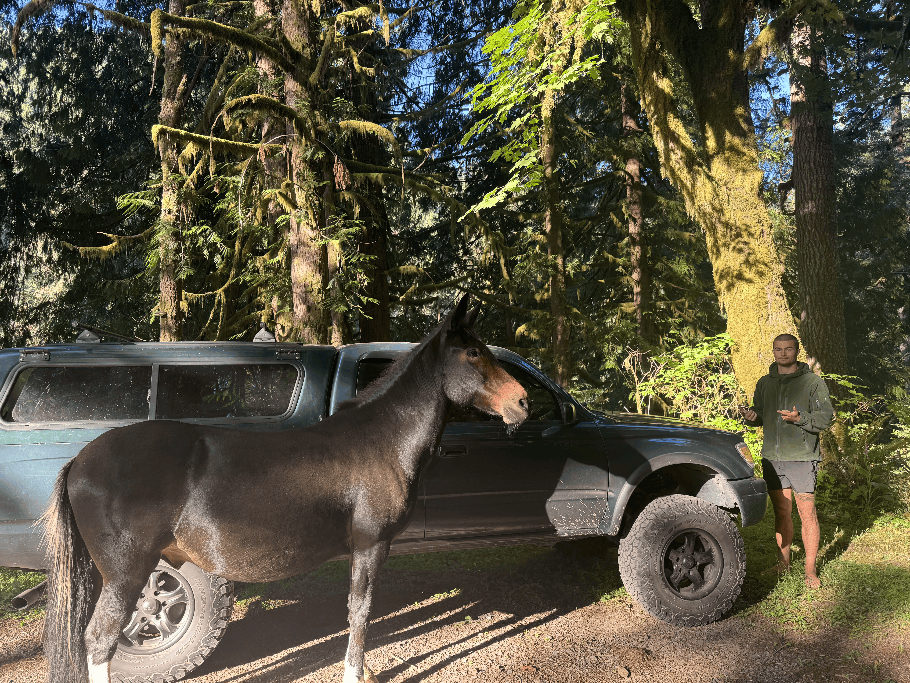
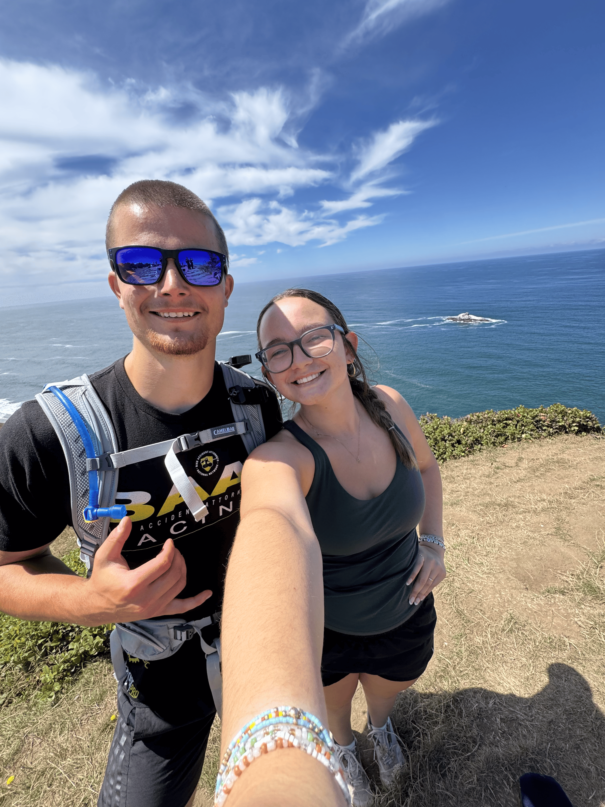
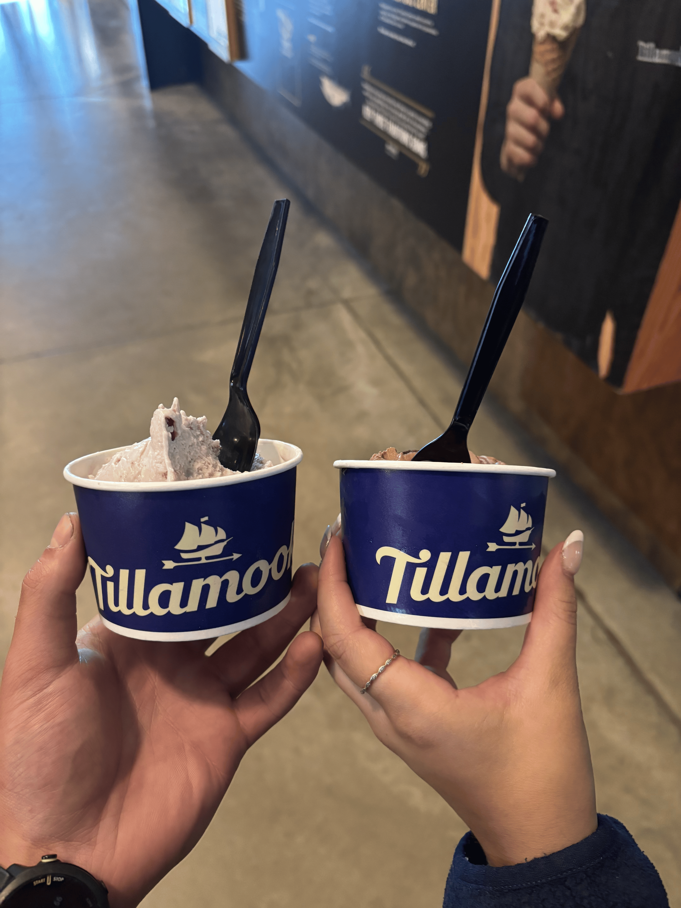

The next day, we woke up to a new friend! A horse, which we think must have come from a nearby property, came and paid us a visit. It took a second to make sure he was OK to interact with, but once we cleared it up, we gave him a few carrots and got on the road to start our day.

We drove to Lincoln City and went on the God's Thumb Hike! For more information on the hike, visit the All Trails site.

To finish up our day, and get a bit closer to Washington, we drove up to Tillamook, Oregon, and visited the Tillamook Factory! We got some Tillamook ice cream (Marionberry for him and Tillamook Mudslide for me).

After this, we found another logging road to stay on and drove straight back home the next day.